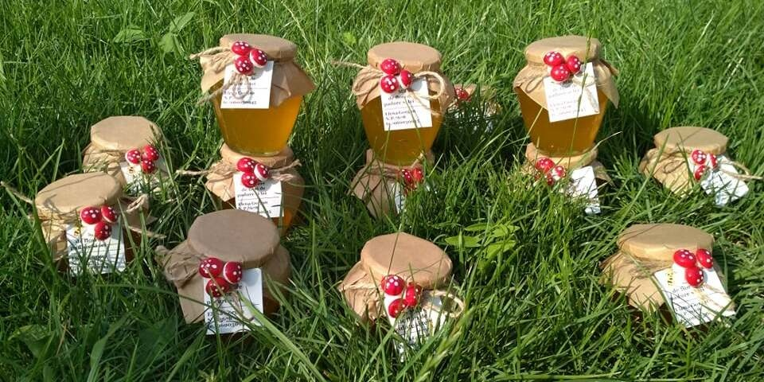
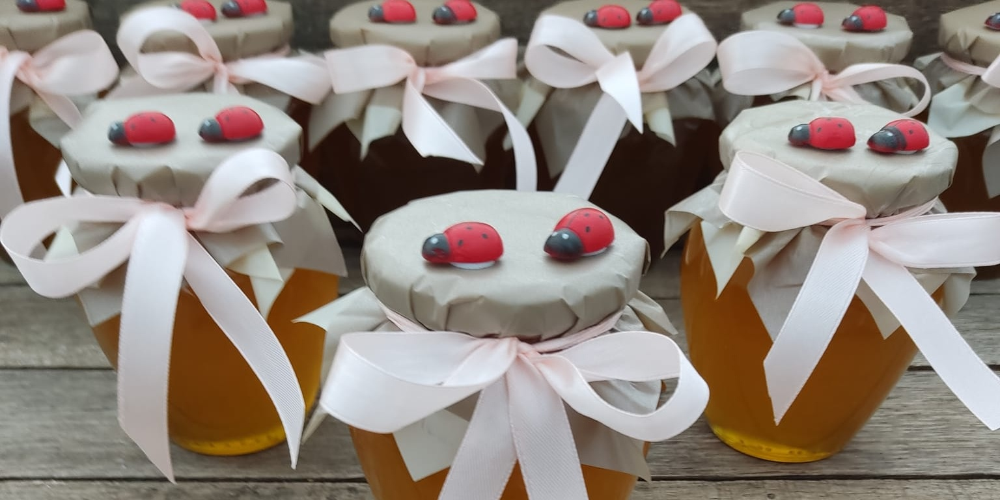
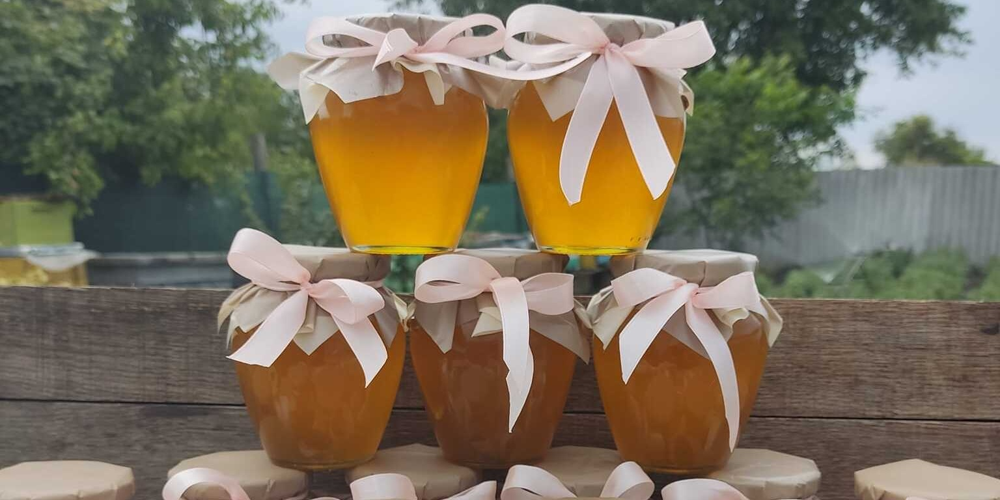
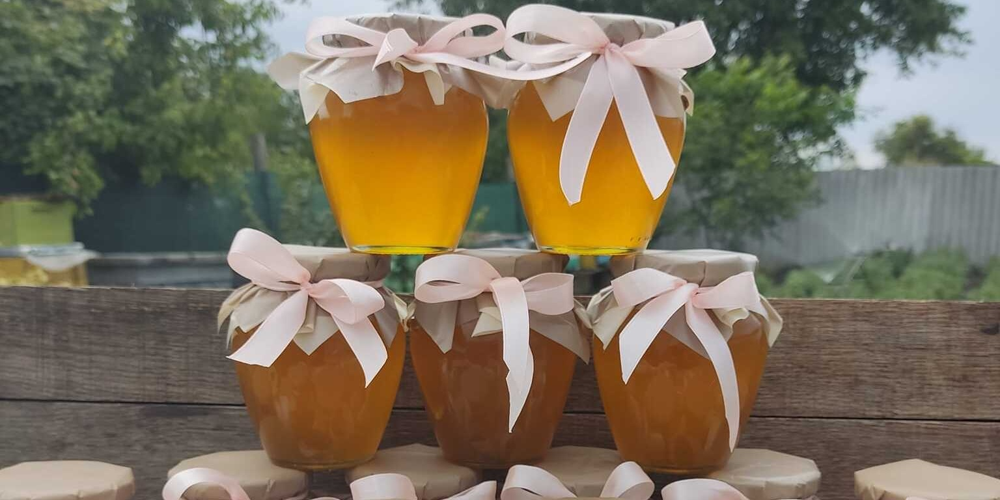
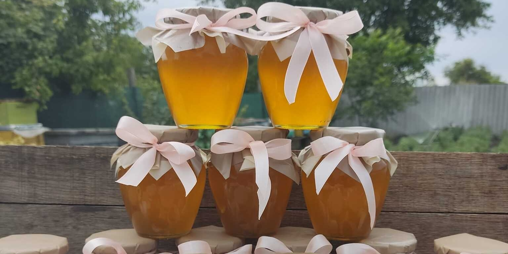

Despre Apiherb


 


O varietate de produse apicole, inclusiv miere și mixuri care combină ingrediente diverse precum plante, nuci, semințe și fructe uscate. Aceste produse sunt obținute prin procesarea cu atenție a surselor naturale care oferă un gust autentic și sănătos. Investind în aceste produse apicole, te bucuri de calitatea superioară a noilor arome și texturi.
Avantajele de a procura produsele noastre:
- Calitate superioară: Întreprinderile autohtone de încredere se concentrează asupra calității produselor lor și oferă produse de calitate superioară.
- Suport local: Prin cumpărarea de la întreprinderi autohtone, susții economia locală și contribui la dezvoltarea comunității tale.
- Sursă verificată: Întreprinderile autohtone de încredere își asumă responsabilitatea de a oferi produse sigure și de calitate prin procese de verificare riguroase.
- Conectare cu natură: Aceste întreprinderi aduc produse naturale la ține, permițându-ți să te conectezi cu natură prin intermediul produselor tale.
- Gust autentic: Produsele apicole și ceaiurile naturale de la întreprinderi autohtone de încredere au un gust autentic, unic, care nu poate fi comparat cu produsele sintetice.
- Reducerea impactului asupra mediului: Întreprinderile autohtone de încredere adesea adopta practici durabile și eco-friendly, reducând impactul lor asupra mediului.
- Relații cu producătorii: Cumpărând direct de la întreprinderile autohtone, ai posibilitatea de a stabili relații cu producătorii și de a află mai multe despre procesul de producție.
- Valoare adăugată: Produsele apicole și ceaiurile naturale de la întreprinderi autohtone de încredere aduc valoare adăugată prin intermediul calității superioare, gustului autentic și a experienței unice.
- Responsabilitate socială: Întreprinderile autohtone de încredere se concentrează asupra responsabilității sociale și adesea contribuie la proiecte sociale și comunitare.
- Conveniență: Întreprinderile autohtone de încredere au un proces de livrare simplu și convenabil, astfel încât să te poți bucură de produsele tale de oriunde.